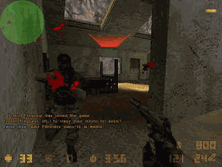
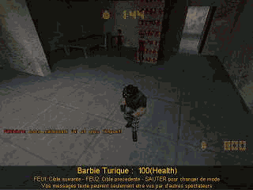

VERSION ACTUELLE: 20020509
Consulter la liste des changements
Rational Autonomous Cybernetic Commandos (RACC) est un projet de développement d'IA pour bot visant à implémenter aussi fidèlement que possible un comportement humain pour NPCs (personnages non-joueur) dans des jeux vidéos de combat subjectif tels que Half-Life. La version actuelle du projet supporte les MODs suivants: Half-Life, Team Fortress Classic, Opposing Force, Azure Sheep, Deathmatch Classic et Counter-Strike (bientôt War In Europe). La disposition du code est basée sur la maquette HPB, un travail réalisé par Botman permettant un interfaçage efficace entre le moteur de jeu Half-Life et à peu près n'importe quelle DLL de MOD. Botman a généreusement fait profiter la communauté des programmeurs Half-Life de ses travaux, et de nombreux développeurs les ont utilisés afin de créer leur propre plugin. Les bots en sont un exemple.
Le projet RACC a été développé sous Licence BSD, afin que quiconque puisse librement utiliser le code source à toutes fins envisageables, pourvu que l'origine du code soit explicitement mentionnée dans le produit, c-à-d. la maquette HPB de Botman.
NOTE: Botman N'EST PAS AFFILIÉ AVEC RACC EN QUOI QUE CE SOIT! NE LE CONTACTEZ PAS POUR TOUTE QUESTION OU REQUÊTE AU SUJET DE CE BOT -- VOYEZ PLUTÔT À LA SECTION [auteur].
Counter-Strike: un bot à l'attaque

Les caractéristiques de l'IA des RATIONAL AUTONOMOUS CYBERNETIC COMMANDOS sont:
Installation et réglage des bots:
Communication:
Comportement de combat:
Navigation:
Interaction Joueur/Bot:
Divers:
Counter-Strike: un bot tenant la position

Half-Life est un jeu vidéo de combat subjectif, ce qui signifie que le joueur voit le monde du jeu à travers les yeux de son personnage, ceci produisant un sentiment de réalisme accru. Le but du jeu est, pour le joueur, de faire utilisation des armes qu'il collecte dans le monde du jeu afin d'éliminer ses ennemis, qui peuvent être des monstres contrôlés par l'ordinateur (en mode simple joueur) ou de vrais joueurs ennemis (en mode multijoueur). Les gens peuvent jouer par Internet, ou dans des LANs (petits réseaux locaux temporaires dédiés), et ainsi exploser la cervelle de leurs amis durant des nuits entières.
Counter-Strike est le MOD ("modification" du jeu) pour Half-Life le plus célèbre, dans lequel les gens jouent avec de nouveaux personnages, nouvelles armes, nouveaux décors mais surtout dans un nouveau contexte. Counter-Strike est un jeu qui repose sur la coopération où les équipes terroristes et anti-terroristes s'affrontent l'une l'autre. Ce MOD est très attaché au réalisme, c'est pourquoi les balles dans la tête et les chutes de haut sont mortelles.
Bot signifie robot. Un bot est un adversaire contrôlé par ordinateur, avec lequel ceux qui ne sont pas connectés à Internet ou ceux qui ont manqué la dernière LAN peuvent s'entraîner un peu, en attendant la suivante. Un bot a l'apparence d'un joueur humain, et son IA est programmée pour simuler le comportement normal d'un joueur en cours de partie : vous tirer dessus quand il vous voit, escalader les échelles, se cacher sous un escalier en attendant votre passage, collecter des objets, se moquer de vous quand vous êtes mort, en somme toutes les fourberies possibles et imaginables comme dans un véritable jeu en réseau. Si le bot est bon, le joueur peut avoir l'impression de jouer contre un adversaire humain.
L'IA d'un bot est beaucoup plus complexe que celle des monstres standard du jeu, lesquels peuvent sembler assez stupides en général. Le but poursuivi par le développeur consiste à faire penser son bot en temps réel : le rendre capable d'identifier un mur, une porte, son arme, un ennemi qui le canarde, lui faire comprendre que s'il chute de haut il risque de se blesser, le rendre capable soit de courir se cacher ou de décider d'attaquer quand il est pris sous un feu nourri, de savoir quelle est la meilleure arme à utiliser dans telle ou telle situation, savoir quand tirer par rafales, prendre le temps de viser ou jeter une grenade, ainsi que bon nombre de comportements évidents qui doivent être correctement implémentés dans l'IA afin de rendre son bot sinon intelligent, du moins moins stupide, encore et encore.